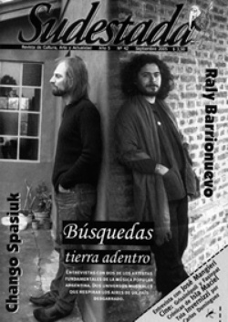

Buscar
Raly Barrionuevo y Chango Spasiuk: búsquedas tierra adentro
Buscar, de algún modo, es interesarse por algo o por alguien que está más allá de nuestro limitado universo de conocimientos. Buscar es, del mismo modo, buscarse. El camino de un artista es pura búsqueda, es pelear hasta encontrar, y después romper y retomar la marcha. "Al andar se hace camino, y al volver la vista atrás, se ve la senda que nunca se ha de volver a pisar", escribió Antonio Machado hace tiempo, pero la cita alcanza el presente y lo potencia. Raly Barrionuevo, con sus melodías mezcla de peñas santiagueñas y discos de Los Beatles; y el Chango Spasiuk, que transporta mucho del universo chamamecero en su acordeón, son un reflejo de estos tiempos de búsqueda. Lejos de la mirada absurda de una ciudad que elige ignorar todo aquello que no conoce, están Raly y el Chango, dispersando su música por el interior del país o representando nuestro folklore en tierras lejanas; están lejos también de los grandes escenarios, de los grandes negocios que transforman al artista en mercenario de su propia música y lo disuelven hasta apagarlo, uno puede cruzarse por los caminos del Raly o del Chango y seguirle la huella. Y escucharlos, de paso, contar su presente.
Edición N° 42
Septiembre 2005
Revista bimensual
Comprar edición impresaSumario
- Raly Barrionuevo y Chango Spasiuk: búsquedas tierra adentro
- Fundamentalistas del aire acondicionado
- La clase obrera va al cine
- Paisajes de la isla Maciel
- Tola Invernizzi: El erotismo mirado por el ojo de la conciencia
- Motines y revoluciones en la viñeta
Compartir Articulo
Raly Barrionuevo
Los caminos del arte popular comprimen, anticipan, sintetizan. En el devenir cotidiano, en el que rastrea memorias y sentires en cada una de sus creaciones, el artista repiensa su grado de compromiso, se observa a sí mismo para no desvanecerse, escucha su deseo interno para resurgir con él. Un sendero se esconde en la mirada de los otros, apenas un sendero que toma formas diferentes e insospechadas. Las presiones, la angustia irrumpen desde adentro, como voces dolientes, inseguras. ¿Cuál es el rol del músico popular en tiempos urgentes, incandescentes? ¿Qué caminos debe recorrer, a través de sus canciones? ¿Hacia dónde van ellas? ¿A quién le cantan? ¿Encarnan lo posible, vivencian el mundo que buscan preanunciar, construir?
"A mí me aburre cuando hago una cosa parecida a otra, y prefiero no hacer nada", dice Raly Barrionuevo, sentado junto a una larga mesa de madera sostenida por caballetes, dentro de una inmensa carpa en las afueras de Germania, pequeño pueblo al noroeste de la provincia de Buenos Aires al que viajó Sudestada el pasado 14 de agosto para realizar la entrevista. El sopor de la tarde atraviesa los cuerpos y los rostros allí en Germania, donde Raly tocará por la noche, a 30 kilómetros de General Pinto, bajo el silencio insomne de la pampa. No existen demasiadas certezas en esa fría tarde para el santiagueño, cuyas facciones de niño grande, disimuladas bajo la barba negra, se encandilan con los rayos del sol, a través de los pliegues de la carpa. "Momentos importantes", afirma Raly, con los ojos entrecerrados, en los que parecen colarse recuerdos de otro tiempo, como un lugar al que quisiera volver.
Una voz pueblerina y errante, cantó en algún viejo tema, acerca de sí mismo. Apenas una sombra que persigue retazos de memoria, dispersos por historias que lo envuelven, lo arrastran por distintos caminos. Allá en Frías, de la mano de Olguita, su madre, al calor de las chacareras de las fiestas aprendió el aroma de las luchas campesinas, que recorren kilómetros y kilómetros de tierra morena, y eligió cantarles al acercarse al MOCASE (Movimiento de Campesinos de Santiago del Estero), ya de adolescente.
Historias evanescentes, posibles, que andan por Santiago, Córdoba, distintos lugares. Activas, en cálida lucha, multiplicándose. Nacido en 1972, para Raly el fol-klore es vínculo con la tierra, cambio, desafío. La música popular florece en los márgenes, en el umbral de lo nuevo. Ey paisano, su último disco, sintetiza varias de las incansables obsesiones de sus anteriores registros, Circo Criollo y Población Milagro, en los que a través del rock y el folklore condensa la búsqueda de un sonido latinoamericano.
-Ya la gente, antes de llegar a Ey paisano ha conocido mi posición política como músico. Lo he dejado bien en claro en los discos anteriores: bah, la poca claridad que puedo llegar a tener por momentos, porque es una constante búsqueda. Por ahí peco de demasiado autocrítico, y a veces pienso en dejar de tocar, porque no me siento capacitado. Siento que hago cosas que no tienen nada que ver, quiero dejar, pero al rato vuelvo porque me anima mi gente", dice, con la vista hacia abajo, mientras con un pie escarba en la arena.
Compuestas en su mayoría por Raly y el guitarrista Ernesto Guevara, compañero de ruta desde hace años, en las canciones de Ey paisano se multiplica un deseo, una misma voz femenina: "Quise rendir homenaje a la mujer como símbolo latinoamericano de lucha. Hay una línea de encuentro en las letras: Una mujer está dedicada a Violeta Parra; Madre del Rosario habla de una fiesta en la serranía baja de Catamarca, a la que vamos todos los años: una santa laica, coronada por la gente. Una ciega de nacimiento, que curaba con yuyos. Mañanas de Navidad le canta a una mujer que pasó mucho tiempo en una cárcel clandestina", detalla.
-Las veces que he pensado en no tocar, me he visto también muy desorientado. Si tuviera que elegir, trabajaría en el campo, o haría algo en el mismo rumbo de lo que vengo haciendo, pero más activo. En un momento yo me sentía muy inútil, no hace mucho. Y estaba cantando", insiste, reivindicándose heredero de un enorme capítulo de cantores santiagueños que abandonaron el tradicionalismo y la arenga paisajística del folklore.
Luis Gurevich, productor del disco, con quien Raly anhelaba trabajar desde hace años, señaló que faltaban dos canciones para comenzar a grabar. Distintas al resto, pidió. "Y dije no sé... yo no soy de escribir tan fácilmente. Hay changos que tienen mucha facilidad para escribir, pero a mí me cuesta muchísimo. O no escribo cosas que sean hit. Hasta ahora nunca he escrito una canción que sea "hit", ni tampoco es mi búsqueda", delimita Raly.
La nota completa en Sudestada n°42.
----------------
Chango Spasiuk
"Hay que cerrar los ojos para ver", define el Chango. Y nada más difícil que despojarse de toda información que no corresponda al melodioso transitar de su acordeón por nuestros sentidos. Si cerramos los ojos para escuchar la música de Spasiuk, los acordes de su último disco, "Tarefero de mis pagos", las imágenes no demoran en llegar. Como antes, como ahora, el Chango parece obstinado en eliminar todo aquello que pueda contaminar la relación entre la música y los sentidos. Su pelea, su búsqueda tiene que ver con ese ideal de pureza, con ese anhelo de perfecta comunión entre su instrumento y los ojos que se cierran, y los sentidos en alerta. Nada más, nada más en el medio de esa epifanía mágica que nos transporta a territorios nuevos, a sensaciones profundas, a voces y susurros ignorados. Sólo es música, repite el Chango.
Lejos de su Misiones natal, pero más lejos aún del ruido que contamina las calles de Buenos Aires, el Chango nos recibe en su casa de General Rodríguez, a orillas de la ruta 7, como a mitad de camino entre su refugio preferido para la composición, y esa ciudad-escenario que de vez en cuando se equivoca y deja entrar melodías sutiles y perfumadas en medio de tantos sentidos apagados.
¿Por qué elegiste la imagen de los tareferos como representación de tu nuevo disco?
Mucho de lo que hago no viene de un proceso intelectual, yo no armo el disco en mi cabeza previamente. No funciona así. Es más desde otro lugar, es como una certeza que uno tiene. Porque lo siento, no porque lo piense. Yo había empezado a viajar por Europa en los últimos años y el único disco que conocían allí era "Chamamé crudo", y ya cuando estaba tocando en vivo lo hacía tocando cada vez más acústico. Mi música iba cambiando, no el tipo de composición, pero tímbricamente iba cambiando todo el concepto y yo realmente necesitaba un disco que representara cómo estaba tocando en ese momento. Eso empezó a dar vueltas en mi cabeza, y hace un par de años conocí a Ben Mandelson, el productor del disco, quien se interesó mucho en mi música. Nos conocimos en el London Jazz Festival de Inglaterra, y ahí empezamos a escribirnos y a hablar de lo bueno que sería hacer un disco totalmente acústico: en vez de bajo eléctrico, un contrabajo; en vez de batería, cajones. Si mi música tiene una imagen y si esa imagen se ve a través de un vidrio, yo quiero limpiar el vidrio todo lo que se pueda para que se vea nítidamente, de la manera más clara posible. ¿Cómo buscar esa claridad? ¿Cómo buscar esa pureza? Tengo que empezar por lo más noble, por las cosas acústicas, por la madera, por lo más natural posible.
Trabajamos y trabajamos, hasta que a mediados del año pasado nos juntamos a grabar el disco en su estudio. En esa instancia vos tenés un montón de ideas sueltas y tenés que empezar a definirlas. Lo que sí estuvo claro desde el principio fue el concepto. Entonces empecé a hacerme la idea de un disco, no como una serie de temas, sino como un mundo sonoro completo. Y de golpe, de venir escuchando un tema como "Tarefero de mis pagos" todos los días, digo "qué bello que es esto". Como en un momento en que todo el mundo que quiere decir algo escribe un montón de palabras y no dice nada, estas personas con palabras tan simples, tan poco complicadas, pueden pintar un mundo tan perfecto, tan claro. No solamente describir el paisaje, si no otras cosas, sensaciones de la persona que está en ese contexto. Entonces dije: 'este tema tiene que estar en el disco'.
Yo compongo suficiente como para hacer un disco con mi música, pero se trata de decir qué es lo que necesito para ese cuadro. Si hay algo de otros autores que está dentro de ese contexto, también entra. Entonces elegí grabar el tema. Compuse un interludio, porque el tema, en realidad, es "Tarefero de mis pagos/ allá en el yerbal", son dos temas. "Tarefero..." es la letra y la música del chamamé cantado y después yo compuse más música porque no quería repetir el estribillo cantado. Pensé en quién lo podría cantar, y me imaginé a Antolín Gómez, que fue un cantor de Isaac Abitbol, un tipo de cantor que no subraya nada. ¿Viste que hay cantores que subrayan todo, todo el tiempo? Es como que cantan y abajo te pasan el fluor, el resaltador.
La nota completa en Sudestada n°42.
Comentarios
Walter Marini
Jaime Galeano
Patricio Féminis
Ignacio Portela
Hugo Montero
Articulos más vistos


LIBRERÍA SUDESTADA

Colección infantil

Distribuidora de Libros

Suscripción

Sudestada en URUGUAY

Otros articulos de esta edición
Paisajes de la isla Maciel
Lugar de inspiración de los artistas de la ribera del 1900, por sus calles anduvieron Benito Quinquela Martín, Juan de ...
Motines y revoluciones en la viñeta
Un universo de hechos y personajes surgen en el interior de una viñeta. ¿Pero qué sucede con la viñeta misma? ...
 Plástica
Plástica
Tola Invernizzi: El erotismo mirado por el ojo de la conciencia
Una conversación con Tola Invernizzi, pintor y mito de Uruguay.
Fundamentalistas del aire acondicionado
La clase obrera va al cine
Mucho se ha escrito y debatido en el campo del arte sobre la relación, intrínseca o no, que debe existir ...